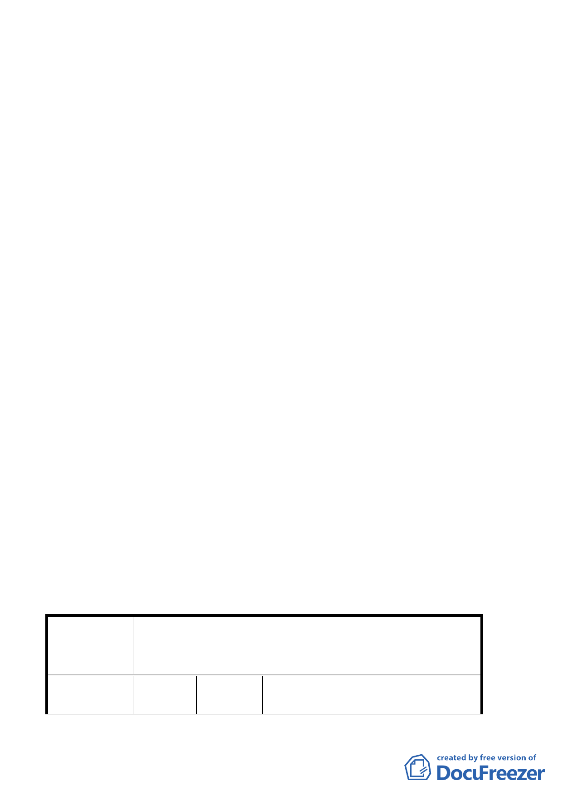

二、有關變更後之廣場用地位置以本次所送計畫內容通過，並俟
後續擬定都市更新事業暨權利變換計畫報核時，本案再行公
告發布實施。惟為保留計畫彈性，於都市更新事業計畫擬具
期間如有涉及廣場位置調整之更合適方案，市府需再提本委
員會審議。
三、計畫書第 5 頁「五、都市更新」文字修正為「(一) 為配合整
體發展政策及加速推動本計畫區推動都市更新，改善當地環
境品質，計畫範圍全區劃定為都市更新單元，得依都市更新
條例及其相關規定辦理；並以全區原法定容積據以核計都市
更新獎勵容積。(二)本案辦理都市更新事業應併同開闢廣場
用地，開闢完成後須登記為臺北市所有。」
四、計畫書附件第 2 頁都市設計管制要點所述之帶狀式開放空間：
(2)3.64 公尺帶狀式開放空間項內，修正「A.於西園路側指定
退縮 3.64 公尺建築，併同西園路上人行空間規劃設置自行車
車道為原則。」文字為「A.……，併同西園路上人行空間整體
規劃植栽及人行與自行車車道。」。並修正「B.應自相臨道路
境界線 1.5 公尺範圍內種植開展型喬木行道樹，……」為「B.
植栽以種植開展型喬木行道樹，……」，以茲完備。
五、全案除前述各項決議，其餘依發展局所提補充會議資料修正
後通過。
六、公民或團體所提意見審決如後附綜理表。
臺北市都市計畫委員會公民或團體所提意見綜理表
案名
編號
「變更臺北市萬華區莒光段三小段 190 地號等 11
筆土地第三之一種住宅區為廣場用地暨劃定周邊地
區為都市更新單元」細部計畫案
1
陳情人
陳志堅、陳洪美丹、蔡麗玉、
陳加協、陳洪瓊瑤
5